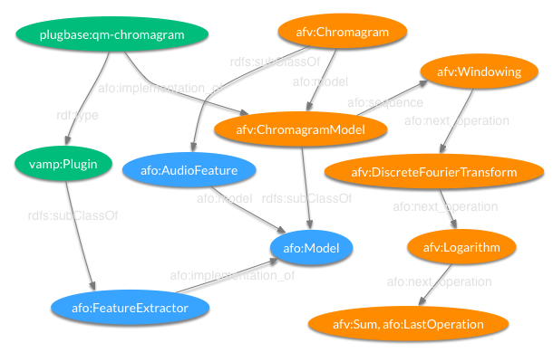

The Audio Feature Vocabulary defines terms for the tool and task specific ontologies and implements the model layer of the ontology framework. This enables the definition of tool and task specific feature implementations and leaves any categorisation or taxonomic organisation to be specified in the implementation layer. The vocabulary also specifies computational workflow models for some of the features which can be linked to from lower level ontologies.
Prefixes
- @prefix xml: <http://www.w3.org/XML/1998/namespace> .
- @prefix owl: <http://www.w3.org/2002/07/owl#> .
- @prefix afo: <http://sovarr.c4dm.eecs.qmul.ac.uk/af/ontology/1.1#> .
- @prefix rdfs: <http://www.w3.org/2000/01/rdf-schema#> .
- @prefix vs: <http://www.w3.org/2003/06/sw-vocab-status/ns#> .
- @prefix dc: <http://purl.org/dc/elements/1.1/> .
- @prefix rdf: <http://www.w3.org/1999/02/22-rdf-syntax-ns#> .
- @prefix xsd: <http://www.w3.org/2001/XMLSchema#> .
- @prefix ns1: <http://purl.org/dc/elements/1.1/> .
- @prefix afv: <http://sovarr.c4dm.eecs.qmul.ac.uk/af/vocabulary/1.1#> .
Terms
ADRess (Class) ADRessSpectrum (Class) ADRessStereoSpectrum (Class) AbsMax (Class) AdaptiveSpectrogram (Class) AdaptiveTimeFrequencyTransform (Class) AdaptiveTimeFrequencyTransformComp (Class) AimBoxes (Class) AimGammatone (Class) AimHCL (Class) AimHCL2 (Class) AimLocalMax (Class) AimPZFC (Class) AimPZFC2 (Class) AimSAI (Class) AimSSI (Class) AimVQ (Class) AmplitudeDescriptor (Class) AmplitudeModulation (Class) AmplitudeofEnergyModulation (Class) AreaMoments (Class) AreaMomentsConstantQMFCC (Class) AreaMomentsLogConstantQ (Class) AreaMomentsMFCC (Class) AreaPolynomialApproximation (Class) AreaPolynomialApproximationConstantQMFCC (Class) AreaPolynomialApproximationLogConstantQ (Class) Attack (Class) AttackLeap (Class) AttackSlope (Class) AttackTime (Class) AuditoryFilterBankTemporalEnvelopes (Class) AutoCorrelation (Class) AutoCorrelationFFT (Class) AutoCorrelationPeaksIntegrator (Class) Autocorrelation (Class) AutocorrelationMFCCs (Class) Autoregression (Class) AverageDeviation (Class) AverageMagnitudeDifferenceFunction (Class) AverageSquaredDifferenceFunction (Class) BandPeriodicity (Class) BandSpectralDeviation (Class) BandTristimulus (Class) BandpassFilter (Class) BandpassFilterBank (Class) Bandwidth (Class) BarandBeatTracker (Class) BarkCoefficients (Class) BarkscaleFrequencyCepstralCoefficients (Class) Bars (Class) BassChromagram (Class) BeatCount (Class) BeatHistogram (Class) BeatHistogramFromPeaks (Class) BeatHistogramLabels (Class) BeatSpectralDifference (Class) BeatSpectrum (Class) BeatSum (Class) BeatTracker (Class) Brightness (Class) CepstralRecursionFormula (Class) Cepstrum (Class) ChordEstimate (Class) Chordino (Class) ChromaCENSFeatures (Class) ChromaMeans (Class) Chromagram (Class) ChromagramandBassChromagram (Class) CombFilter (Class) Compactness (Class) ComplexDomainOnsetDetection (Class) ConstantQ (Class) ConstantQMFCC (Class) ConstantQSpectrogram (Class) ConstantQTransform (Class) CorrelationPattern (Class) Crest (Class) CrossCorrelation (Class) CrossCorrelation (Class) CrossCorrelation (Class) CrossCorrelation (Class) CyclicBeatSpectrum (Class) DWPTbasedRhythmFeature (Class) Daub4 (Class) DaubechiesWaveletCoefficientHistogram (Class) Decay (Class) Decaytime (Class) DecorrelatedFilterBanks (Class) Decrease (Class) DecreaseSlope (Class) DeltaDeltaMFCC (Class) DeltaMFCC (Class) DeltaSpectralPattern (Class) Derivate (Class) DerivationDifference (Class) Deviation (Class) Deviation (Class) Deviation (Class) Deviation (Class) Differencevector (Class) DiscreteCosineTransform (Class) DiscreteCosineTransform (Class) DiscreteCosineTransform (Class) DiscreteCosineTransform (Class) DiscreteFourierTransform (Class) DiscreteWaveletTransform (Class) DiscreteWaveletTransform (Class) DiscreteWaveletTransform (Class) DiscreteWaveletTransform (Class) DistanceMatrix (Class) DistancefromFirstChannel (Class) DistortionDiscriminantAnalysis (Class) EffectiveDuration (Class) Energy (Class) EnergyBasedOnsetDetectionFunction (Class) EnergySpectralDensity (Class) EnhADRess (Class) EnhADRessStereoSpectrum (Class) Entropy (Class) Envelope (Class) EnvelopeShapeStatistics (Class) EvenHarmonicRatio (Class) EventDensity (Class) ExponentialFunction (Class) FFTBinFrequencies (Class) Feature (Class) FeatureMeans (Class) FeatureVariances (Class) FilterbankMel (Class) Flatnessdb (Class) FluctuationPattern (Class) FluctuationPatternCent (Class) FluctuationPatterns (Class) FractionOfLowEnergyWindows (Class) Frames (Class) FrequencyofEnergyModulation (Class) FuncdamentalFrequency (Class) FundamentalFrequency (Class) FundamentalFrequencyModulation (Class) FundamentalFrequencyfailsafe (Class) GeometricMean (Class) GeorgeTzanetakisModel (Class) GlobalSpectralShapeDescription (Class) GroupDelayFunction (Class) HarmonicChangeDetectionFunction (Class) HarmonicChangeValue (Class) HarmonicCoefficient (Class) HarmonicConcentration (Class) HarmonicDerivate (Class) HarmonicEnergy (Class) HarmonicEnergyEntropy (Class) HarmonicPeakDetection (Class) HarmonicPitchClassProfile (Class) HarmonicProductSpectrum (Class) HarmonicProminence (Class) HarmonicSpectralCentroid (Class) HarmonicSpectralDecrease (Class) HarmonicSpectralDeviation (Class) HarmonicSpectralFlux (Class) HarmonicSpectralKurtosis (Class) HarmonicSpectralRolloff (Class) HarmonicSpectralShape (Class) HarmonicSpectralSkewness (Class) HarmonicSpectralSlope (Class) HarmonicSpectralSmoothness (Class) HarmonicSpectralSpread (Class) HarmonicSpectralVariation (Class) HarmonicSpectrum (Class) HarmonicTristimulus (Class) HighFrequencyContent (Class) HighFrequencyContentOnsetDetectionFunction (Class) HighestValue (Class) Histogram (Class) HistogramIntegrator (Class) IBTINESCBeatTracker (Class) IndependentComponentAnalysis (Class) Inharmonicity (Class) IntegralLoudness (Class) Irregularity (Class) IrregularityI (Class) IrregularityII (Class) Irregularityj (Class) Irregularityk (Class) JointAcousticandModuluationFrequency (Class) Key (Class) KeyDetector (Class) KeyMode (Class) KeySOM (Class) KeyStrength (Class) KeyStrengthPlot (Class) KrumhanslKeyFinder (Class) KullbackLieblerOnsetDetectionFunction (Class) LNorm (Class) LevelCrossingDetector (Class) LineSpectralFrequencies (Class) LineSpectralPairs (Class) LinearPredictionCepstralCoefficients (Class) LinearPredictionZCR (Class) LinearPredictiveCoding (Class) LinearSpectralPairs (Class) LocalSingleGaussianModel (Class) LocalTuning (Class) LogAttackTime (Class) LogConstantQ (Class) LogFrequencySpectrum (Class) LogLikelihoodofChordEstimate (Class) Logarithm (Class) LogarithmicFluctuationPattern (Class) Loudness (Class) LowEnergy (Class) LowFreqEnergyRelation (Class) LowestValue (Class) LowpassFilter (Class) MELODIAMelodyExtraction (Class) MELODIAMelodyExtractionintermediatesteps (Class) MIDINote (Class) MPEG7AudioFundamentalFrequency (Class) MPEG7AudioHarmonicity (Class) MPEG7AudioSpectrumBasis (Class) MPEG7AudioSpectrumCentroid (Class) MPEG7AudioSpectrumSpread (Class) MPEG7AudioWaveform (Class) MPEG7HarmonicSpectralCentroid (Class) MPEG7HarmonicSpectralDeviation (Class) MPEG7HarmonicSpectralSpread (Class) MPEG7HarmonicSpectralVariation (Class) MPEG7LogAttackTime (Class) MPEG7SpectralCentroid (Class) MPEG7TemporalCentroid (Class) MagnitudeKurtosis (Class) MagnitudeSkewness (Class) MagnitudeSpectrum (Class) MandelEllis (Class) MaxArgMax (Class) MaxMagFreq (Class) MaxMin (Class) Maximum (Class) Mean (Class) Mean (Class) Mean (Class) Mean (Class) MeanAbsoluteDeviation (Class) MeansofCoefficients (Class) MeddisHairCell (Class) Median (Class) Median (Class) Median (Class) Median (Class) MelSpectrum (Class) MelscaleFrequencyCepstralCoefficients (Class) MinArgMin (Class) Minimum (Class) Mode (Class) ModifiedGroupDelay (Class) ModifiedKullbackLieblerOnsetDetectionFunction (Class) ModulatedComplexLappedTransform (Class) ModulationEnergy (Class) ModulationFrequencyVarianceDescriptor (Class) ModulationHarmonicCoefficients (Class) Moments (Class) Multiplicity (Class) MultiresolutionEntropy (Class) NNLSChroma (Class) NoiseEnergy (Class) NoiseRobustAuditoryFeature (Class) Noisiness (Class) NonSilentRegions (Class) Nonzerocount (Class) Normalization (Class) NoteOnsetDetector (Class) NoteRepresentationofChordEstimate (Class) NoteTracker (Class) OctaveBandSignalIntensity (Class) OctaveBandSignalIntensityRatio (Class) OctaveBasedSpectralContrast (Class) OddEvenRatio (Class) OddToEvenBandRatio (Class) OddToEvenHarmonicRatio (Class) OnsetDetectionFunction (Class) OrderedDistancesfromFirstChannel (Class) PeakDetection (Class) PeakFinder (Class) PeakPicker (Class) PeakSpectrum (Class) Peaker (Class) PeakerOnset (Class) Percentile (Class) PerceptualLinearPrediction (Class) PerceptualSharpness (Class) PerceptualSpectralCentroid (Class) PerceptualSpectralDecrease (Class) PerceptualSpectralEnvelopeShape (Class) PerceptualSpectralKurtosis (Class) PerceptualSpectralRolloff (Class) PerceptualSpectralSkewness (Class) PerceptualSpectralSlope (Class) PerceptualSpectralSpread (Class) PerceptualSpectralVariation (Class) PerceptualSpread (Class) PhaseBasedMethodOnsetDetectionFunction (Class) PhaseSpaceEmbedding (Class) PhaseSpaceFeatures (Class) Pitch (Class) PitchCountours (Class) PitchDiff (Class) PitchFFTYIN (Class) PitchFastComb (Class) PitchHistogram (Class) PitchMultiComb (Class) PitchProfile (Class) PitchSchmitt (Class) PitchSynchronousZCPA (Class) PitchYIN (Class) PolynomialRootFinding (Class) PolyphonicTranscription (Class) Power (Class) Power (Class) Power (Class) Power (Class) PowerSpectrum (Class) PowerToAverageRatio (Class) PrincipalComponentAnalysis (Class) PrincipalMelSpectrumComponents (Class) PsychoacousticalPitch (Class) PulseClarity (Class) PulseMetric (Class) PureTonalness (Class) RMSAmplitude (Class) RMSEnergy (Class) RMSEnergyEnvelope (Class) RatescalefrequencyFeatures (Class) Regression (Class) RelaitvespecificLoudness (Class) RelativeDifferenceFunction (Class) RelativeSpectralPLP (Class) Release (Class) RhythmHistogram (Class) RhythmPatterns (Class) RhythmicFluctuation (Class) RiseTime (Class) RootMeanSquare (Class) RootMeanSquare (Class) RootMeanSquare (Class) RootMeanSquare (Class) Roughness (Class) RunningAutocorrelation (Class) RunningStatistics (Class) SalienceFunction (Class) Segmenter (Class) SemitoneSpectrum (Class) Sharpness (Class) ShortTimeEnergy (Class) Signal (Class) SignalAutoCorrelationFunction (Class) SignalToNoiseRatio (Class) SilenceTest (Class) SilentRegions (Class) Similarity (Class) SingularValueDecomposition (Class) SlopeIntegrator (Class) SmoothedDetectionFunction (Class) Smoothness (Class) Sone (Class) SpectralAverageDeviation (Class) SpectralCenter (Class) SpectralCentroid (Class) SpectralContrastPattern (Class) SpectralCrest (Class) SpectralCrestFactor (Class) SpectralCrestFactorPerBand (Class) SpectralDecrease (Class) SpectralDifferenceMethodOnsetDetectionFunction (Class) SpectralDispersion (Class) SpectralDissonance (Class) SpectralFlatness (Class) SpectralFlatnessAllBands (Class) SpectralFlatnessPerBand (Class) SpectralFlux (Class) SpectralFluxOnsetDetectionFunction (Class) SpectralInharmonicity (Class) SpectralKurtosis (Class) SpectralMean (Class) SpectralPattern (Class) SpectralPatternCent (Class) SpectralPeakStructure (Class) SpectralPeaks (Class) SpectralPercentile (Class) SpectralRolloff (Class) SpectralShape (Class) SpectralShapeStatistics (Class) SpectralSharpness (Class) SpectralSkewness (Class) SpectralSlope (Class) SpectralSmoothness (Class) SpectralSpread (Class) SpectralStandardDeviation (Class) SpectralVariability (Class) SpectralVariance (Class) Spectralbinning (Class) SpectrotemporalVariation (Class) Spectrum (Class) Spectrum2Chroma (Class) Spectrum2Mel (Class) StandardDeviation (Class) StatisticalIntegrator (Class) StatisticalSpectrumDescriptor (Class) StereoSpectrum (Class) StereoSpectrumFeatures (Class) StereoSpectrumSources (Class) StrengthOfStrongestBeat (Class) StrongestBeat (Class) StrongestFrequencyViaFFTMax (Class) StrongestFrequencyViaSpectralCentroid (Class) StrongestFrequencyViaZeroCrossings (Class) SubbandEnergyRatio (Class) SubbandSpectralFlux (Class) Subbands (Class) Sum (Class) Sum (Class) Sum (Class) Sum (Class) SumofValues (Class) Tempo (Class) TempoandBeatTracker (Class) TemporalCentroid (Class) TemporalDecrease (Class) TemporalIncrease (Class) TemporalRhythmHistogram (Class) TemporalShapeStatistics (Class) TemporalStatisticalSpectrumDescriptor (Class) TimbralWidth (Class) TimbreDistribution (Class) TonalCentroid (Class) TonalChange (Class) TonalChangeDetectionFunction (Class) TonalChangePositions (Class) TonalDissonance (Class) Tonality (Class) TonicPitch (Class) TotalEnergy (Class) TotalEnergyModulation (Class) TotalHarmonicEnergy (Class) TotalNoiseEnergy (Class) Transformto6DTonalContentSpace (Class) TransientSteadyStateSeparation (Class) TriangularFilterBank (Class) Tristimulus (Class) Tristimulus1 (Class) Tristimulus2 (Class) Tristimulus3 (Class) TunedLogFrequencySpectrum (Class) Tuning (Class) Variance (Class) VarianceDeltaSpectralPattern (Class) Volume (Class) WaveletPyramid (Class) WeightingFunction (Class) Windowing (Class) ZeroCrossingPeakAmplitudes (Class) ZeroCrossingRate (Class) ADRess model (Individual) ADRessSpectrum model (Individual) ADRessStereoSpectrum model (Individual) AbsMax model (Individual) AdaptiveSpectrogram model (Individual) AdaptiveTimeFrequencyTransform model (Individual) AdaptiveTimeFrequencyTransform_operation_1 (Individual) AdaptiveTimeFrequencyTransform_operation_2 (Individual) AdaptiveTimeFrequencyTransform_operation_2 (Individual) AimBoxes model (Individual) AimGammatone model (Individual) AimHCL2 model (Individual) AimHCL model (Individual) AimLocalMax model (Individual) AimPZFC2 model (Individual) AimPZFC model (Individual) AimSAI model (Individual) AimSSI model (Individual) AimVQ model (Individual) AmplitudeDescriptor model (Individual) AmplitudeDescriptor_operation_1 (Individual) AmplitudeDescriptor_operation_2 (Individual) AmplitudeDescriptor_operation_3 (Individual) AmplitudeDescriptor_operation_4 (Individual) AmplitudeDescriptor_operation_5 (Individual) AmplitudeDescriptor_operation_6 (Individual) AmplitudeDescriptor_operation_6 (Individual) AmplitudeModulation model (Individual) AmplitudeofEnergyModulation model (Individual) AreaMomentsConstantQMFCC model (Individual) AreaMomentsLogConstantQ model (Individual) AreaMomentsMFCC model (Individual) AreaMoments model (Individual) AreaPolynomialApproximationConstantQMFCC model (Individual) AreaPolynomialApproximationLogConstantQ model (Individual) AreaPolynomialApproximation model (Individual) AttackLeap model (Individual) Attack model (Individual) AttackSlope model (Individual) AttackTime model (Individual) AuditoryFilterBankTemporalEnvelopes model (Individual) AuditoryFilterBankTemporalEnvelopes_operation_1 (Individual) AuditoryFilterBankTemporalEnvelopes_operation_2 (Individual) AuditoryFilterBankTemporalEnvelopes_operation_3 (Individual) AuditoryFilterBankTemporalEnvelopes_operation_4 (Individual) AuditoryFilterBankTemporalEnvelopes_operation_5 (Individual) AuditoryFilterBankTemporalEnvelopes_operation_5 (Individual) AutoCorrelationFFT model (Individual) AutoCorrelation model (Individual) AutoCorrelationPeaksIntegrator model (Individual) AutocorrelationMFCCs model (Individual) AutocorrelationMFCCs_operation_1 (Individual) AutocorrelationMFCCs_operation_2 (Individual) AutocorrelationMFCCs_operation_3 (Individual) AutocorrelationMFCCs_operation_4 (Individual) AutocorrelationMFCCs_operation_5 (Individual) AutocorrelationMFCCs_operation_6 (Individual) AutocorrelationMFCCs_operation_7 (Individual) AutocorrelationMFCCs_operation_7 (Individual) AverageDeviation model (Individual) AverageMagnitudeDifferenceFunction model (Individual) AverageSquaredDifferenceFunction model (Individual) BandPeriodicity model (Individual) BandPeriodicity_operation_1 (Individual) BandPeriodicity_operation_2 (Individual) BandPeriodicity_operation_3 (Individual) BandPeriodicity_operation_4 (Individual) BandPeriodicity_operation_5 (Individual) BandPeriodicity_operation_5 (Individual) BandSpectralDeviation model (Individual) BandTristimulus model (Individual) Bandwidth model (Individual) Bandwidth_operation_1 (Individual) Bandwidth_operation_2 (Individual) Bandwidth_operation_3 (Individual) Bandwidth_operation_4 (Individual) Bandwidth_operation_4 (Individual) Bandwidth_operation_5 (Individual) Bandwidth_operation_5 (Individual) BarandBeatTracker model (Individual) BarkCoefficients model (Individual) BarkscaleFrequencyCepstralCoefficients model (Individual) BarkscaleFrequencyCepstralCoefficients_operation_1 (Individual) BarkscaleFrequencyCepstralCoefficients_operation_2 (Individual) BarkscaleFrequencyCepstralCoefficients_operation_3 (Individual) BarkscaleFrequencyCepstralCoefficients_operation_4 (Individual) BarkscaleFrequencyCepstralCoefficients_operation_5 (Individual) BarkscaleFrequencyCepstralCoefficients_operation_5 (Individual) Bars model (Individual) BassChromagram model (Individual) BeatCount model (Individual) BeatHistogramFromPeaks model (Individual) BeatHistogramLabels model (Individual) BeatHistogram model (Individual) BeatHistogram_operation_1 (Individual) BeatHistogram_operation_2 (Individual) BeatHistogram_operation_3 (Individual) BeatHistogram_operation_4 (Individual) BeatHistogram_operation_5 (Individual) BeatHistogram_operation_6 (Individual) BeatHistogram_operation_7 (Individual) BeatHistogram_operation_7 (Individual) BeatSpectralDifference model (Individual) BeatSpectrum model (Individual) BeatSpectrum_operation_1 (Individual) BeatSpectrum_operation_2 (Individual) BeatSpectrum_operation_3 (Individual) BeatSpectrum_operation_4 (Individual) BeatSpectrum_operation_5 (Individual) BeatSpectrum_operation_6 (Individual) BeatSpectrum_operation_6 (Individual) BeatSum model (Individual) BeatTracker model (Individual) BeatTracker_operation_1 (Individual) BeatTracker_operation_2 (Individual) BeatTracker_operation_3 (Individual) BeatTracker_operation_4 (Individual) BeatTracker_operation_5 (Individual) BeatTracker_operation_6 (Individual) BeatTracker_operation_7 (Individual) BeatTracker_operation_7 (Individual) Brightness model (Individual) Cepstrum model (Individual) ChordEstimate model (Individual) Chordino model (Individual) ChromaCENSFeatures model (Individual) ChromaCENSFeatures_operation_1 (Individual) ChromaCENSFeatures_operation_2 (Individual) ChromaCENSFeatures_operation_3 (Individual) ChromaCENSFeatures_operation_4 (Individual) ChromaCENSFeatures_operation_5 (Individual) ChromaCENSFeatures_operation_5 (Individual) ChromaMeans model (Individual) Chromagram model (Individual) Chromagram_operation_1 (Individual) Chromagram_operation_2 (Individual) Chromagram_operation_3 (Individual) Chromagram_operation_4 (Individual) Chromagram_operation_4 (Individual) ChromagramandBassChromagram model (Individual) Compactness model (Individual) ComplexDomainOnsetDetection model (Individual) ConstantQMFCC model (Individual) ConstantQ model (Individual) ConstantQSpectrogram model (Individual) CorrelationPattern model (Individual) Crest model (Individual) CrossCorrelation model (Individual) CyclicBeatSpectrum model (Individual) CyclicBeatSpectrum_operation_1 (Individual) CyclicBeatSpectrum_operation_2 (Individual) CyclicBeatSpectrum_operation_3 (Individual) CyclicBeatSpectrum_operation_4 (Individual) CyclicBeatSpectrum_operation_5 (Individual) CyclicBeatSpectrum_operation_6 (Individual) CyclicBeatSpectrum_operation_7 (Individual) CyclicBeatSpectrum_operation_8 (Individual) CyclicBeatSpectrum_operation_9 (Individual) CyclicBeatSpectrum_operation_9 (Individual) DWPTbasedRhythmFeature model (Individual) DWPTbasedRhythmFeature_operation_1 (Individual) DWPTbasedRhythmFeature_operation_2 (Individual) DWPTbasedRhythmFeature_operation_3 (Individual) DWPTbasedRhythmFeature_operation_4 (Individual) DWPTbasedRhythmFeature_operation_5 (Individual) DWPTbasedRhythmFeature_operation_5 (Individual) Daub4 model (Individual) DaubechiesWaveletCoefficientHistogram model (Individual) DaubechiesWaveletCoefficientHistogram_operation_1 (Individual) DaubechiesWaveletCoefficientHistogram_operation_2 (Individual) DaubechiesWaveletCoefficientHistogram_operation_3 (Individual) DaubechiesWaveletCoefficientHistogram_operation_3 (Individual) Decay model (Individual) Decaytime model (Individual) DecorrelatedFilterBanks model (Individual) Decrease model (Individual) DecreaseSlope model (Individual) DeltaDeltaMFCC model (Individual) DeltaMFCC model (Individual) DeltaSpectralPattern model (Individual) Derivate model (Individual) Deviation model (Individual) Differencevector model (Individual) DiscreteCosineTransform model (Individual) DiscreteWaveletTransform model (Individual) DistanceMatrix model (Individual) DistancefromFirstChannel model (Individual) DistortionDiscriminantAnalysis model (Individual) DistortionDiscriminantAnalysis_operation_1 (Individual) DistortionDiscriminantAnalysis_operation_2 (Individual) DistortionDiscriminantAnalysis_operation_3 (Individual) DistortionDiscriminantAnalysis_operation_4 (Individual) DistortionDiscriminantAnalysis_operation_5 (Individual) DistortionDiscriminantAnalysis_operation_5 (Individual) EffectiveDuration model (Individual) EnergyBasedOnsetDetectionFunction model (Individual) Energy model (Individual) EnhADRess model (Individual) EnhADRessStereoSpectrum model (Individual) Envelope model (Individual) EnvelopeShapeStatistics model (Individual) EvenHarmonicRatio model (Individual) EventDensity model (Individual) FFTBinFrequencies model (Individual) FeatureMeans model (Individual) Feature model (Individual) FeatureVariances model (Individual) FilterbankMel model (Individual) Flatnessdb model (Individual) FluctuationPatternCent model (Individual) FluctuationPattern model (Individual) FluctuationPatterns model (Individual) FractionOfLowEnergyWindows model (Individual) Frames model (Individual) FrequencyofEnergyModulation model (Individual) FuncdamentalFrequency model (Individual) FundamentalFrequency model (Individual) FundamentalFrequencyModulation model (Individual) FundamentalFrequencyfailsafe model (Individual) GeometricMean model (Individual) GeorgeTzanetakisModel model (Individual) GlobalSpectralShapeDescription model (Individual) HarmonicChangeDetectionFunction model (Individual) HarmonicChangeValue model (Individual) HarmonicCoefficient model (Individual) HarmonicCoefficient_operation_1 (Individual) HarmonicCoefficient_operation_2 (Individual) HarmonicCoefficient_operation_3 (Individual) HarmonicCoefficient_operation_3 (Individual) HarmonicConcentration model (Individual) HarmonicConcentration_operation_1 (Individual) HarmonicConcentration_operation_2 (Individual) HarmonicConcentration_operation_3 (Individual) HarmonicConcentration_operation_4 (Individual) HarmonicConcentration_operation_5 (Individual) HarmonicConcentration_operation_5 (Individual) HarmonicDerivate model (Individual) HarmonicDerivate_operation_1 (Individual) HarmonicDerivate_operation_2 (Individual) HarmonicDerivate_operation_3 (Individual) HarmonicDerivate_operation_4 (Individual) HarmonicDerivate_operation_4 (Individual) HarmonicEnergyEntropy model (Individual) HarmonicEnergyEntropy_operation_1 (Individual) HarmonicEnergyEntropy_operation_2 (Individual) HarmonicEnergyEntropy_operation_3 (Individual) HarmonicEnergyEntropy_operation_4 (Individual) HarmonicEnergyEntropy_operation_4 (Individual) HarmonicEnergy model (Individual) HarmonicPitchClassProfile model (Individual) HarmonicProductSpectrum model (Individual) HarmonicProminence model (Individual) HarmonicProminence_operation_1 (Individual) HarmonicProminence_operation_2 (Individual) HarmonicProminence_operation_3 (Individual) HarmonicProminence_operation_3 (Individual) HarmonicSpectralCentroid model (Individual) HarmonicSpectralDecrease model (Individual) HarmonicSpectralDeviation model (Individual) HarmonicSpectralFlux model (Individual) HarmonicSpectralKurtosis model (Individual) HarmonicSpectralRolloff model (Individual) HarmonicSpectralShape model (Individual) HarmonicSpectralSkewness model (Individual) HarmonicSpectralSlope model (Individual) HarmonicSpectralSmoothness model (Individual) HarmonicSpectralSpread model (Individual) HarmonicSpectralVariation model (Individual) HarmonicSpectrum model (Individual) HarmonicTristimulus model (Individual) HighFrequencyContent model (Individual) HighFrequencyContentOnsetDetectionFunction model (Individual) HighestValue model (Individual) HistogramIntegrator model (Individual) IBTINESCBeatTracker model (Individual) Inharmonicity model (Individual) Inharmonicity_operation_1 (Individual) Inharmonicity_operation_2 (Individual) Inharmonicity_operation_3 (Individual) Inharmonicity_operation_4 (Individual) Inharmonicity_operation_4 (Individual) IntegralLoudness model (Individual) IntegralLoudness_operation_1 (Individual) IntegralLoudness_operation_2 (Individual) IntegralLoudness_operation_3 (Individual) IntegralLoudness_operation_4 (Individual) IntegralLoudness_operation_5 (Individual) IntegralLoudness_operation_6 (Individual) IntegralLoudness_operation_7 (Individual) IntegralLoudness_operation_7 (Individual) IrregularityII model (Individual) IrregularityI model (Individual) Irregularity model (Individual) Irregularityj model (Individual) Irregularityk model (Individual) JointAcousticandModuluationFrequency model (Individual) JointAcousticandModuluationFrequency_operation_1 (Individual) JointAcousticandModuluationFrequency_operation_2 (Individual) JointAcousticandModuluationFrequency_operation_3 (Individual) JointAcousticandModuluationFrequency_operation_4 (Individual) JointAcousticandModuluationFrequency_operation_5 (Individual) JointAcousticandModuluationFrequency_operation_6 (Individual) JointAcousticandModuluationFrequency_operation_6 (Individual) KeyDetector model (Individual) KeyMode model (Individual) Key model (Individual) KeySOM model (Individual) KeyStrength model (Individual) KeyStrengthPlot model (Individual) KrumhanslKeyFinder model (Individual) KullbackLieblerOnsetDetectionFunction model (Individual) LNorm model (Individual) LineSpectralFrequencies model (Individual) LineSpectralFrequencies_operation_1 (Individual) LineSpectralFrequencies_operation_2 (Individual) LineSpectralFrequencies_operation_3 (Individual) LineSpectralFrequencies_operation_3 (Individual) LineSpectralPairs model (Individual) LinearPredictionCepstralCoefficients model (Individual) LinearPredictionCepstralCoefficients_operation_1 (Individual) LinearPredictionCepstralCoefficients_operation_2 (Individual) LinearPredictionCepstralCoefficients_operation_2 (Individual) LinearPredictionCepstralCoefficients_operation_3 (Individual) LinearPredictionCepstralCoefficients_operation_4 (Individual) LinearPredictionCepstralCoefficients_operation_4 (Individual) LinearPredictionZCR model (Individual) LinearPredictionZCR_operation_1 (Individual) LinearPredictionZCR_operation_2 (Individual) LinearPredictionZCR_operation_3 (Individual) LinearPredictionZCR_operation_4 (Individual) LinearPredictionZCR_operation_4 (Individual) LinearPredictiveCoding model (Individual) LinearPredictiveCoding_operation_1 (Individual) LinearPredictiveCoding_operation_2 (Individual) LinearPredictiveCoding_operation_2 (Individual) LinearPredictiveCoding_operation_3 (Individual) LinearPredictiveCoding_operation_4 (Individual) LinearPredictiveCoding_operation_4 (Individual) LinearPredictiveCoding_operation_4 (Individual) LinearSpectralPairs model (Individual) LocalSingleGaussianModel model (Individual) LocalTuning model (Individual) LogAttackTime model (Individual) LogConstantQ model (Individual) LogFrequencySpectrum model (Individual) LogLikelihoodofChordEstimate model (Individual) LogarithmicFluctuationPattern model (Individual) Loudness model (Individual) LowEnergy model (Individual) LowFreqEnergyRelation model (Individual) LowestValue model (Individual) MELODIAMelodyExtraction model (Individual) MELODIAMelodyExtractionintermediatesteps model (Individual) MIDINote model (Individual) MPEG7AudioFundamentalFrequency model (Individual) MPEG7AudioFundamentalFrequency_operation_1 (Individual) MPEG7AudioFundamentalFrequency_operation_2 (Individual) MPEG7AudioFundamentalFrequency_operation_3 (Individual) MPEG7AudioFundamentalFrequency_operation_3 (Individual) MPEG7AudioHarmonicity model (Individual) MPEG7AudioHarmonicity_operation_1 (Individual) MPEG7AudioHarmonicity_operation_2 (Individual) MPEG7AudioHarmonicity_operation_3 (Individual) MPEG7AudioHarmonicity_operation_3 (Individual) MPEG7AudioSpectrumBasis model (Individual) MPEG7AudioSpectrumBasis_operation_1 (Individual) MPEG7AudioSpectrumBasis_operation_2 (Individual) MPEG7AudioSpectrumBasis_operation_3 (Individual) MPEG7AudioSpectrumBasis_operation_4 (Individual) MPEG7AudioSpectrumBasis_operation_5 (Individual) MPEG7AudioSpectrumBasis_operation_6 (Individual) MPEG7AudioSpectrumBasis_operation_7 (Individual) MPEG7AudioSpectrumBasis_operation_7 (Individual) MPEG7AudioSpectrumBasis_operation_7 (Individual) MPEG7AudioSpectrumCentroid model (Individual) MPEG7AudioSpectrumCentroid_operation_1 (Individual) MPEG7AudioSpectrumCentroid_operation_2 (Individual) MPEG7AudioSpectrumCentroid_operation_3 (Individual) MPEG7AudioSpectrumCentroid_operation_4 (Individual) MPEG7AudioSpectrumCentroid_operation_5 (Individual) MPEG7AudioSpectrumCentroid_operation_5 (Individual) MPEG7AudioSpectrumSpread model (Individual) MPEG7AudioSpectrumSpread_operation_1 (Individual) MPEG7AudioSpectrumSpread_operation_2 (Individual) MPEG7AudioSpectrumSpread_operation_3 (Individual) MPEG7AudioSpectrumSpread_operation_4 (Individual) MPEG7AudioSpectrumSpread_operation_5 (Individual) MPEG7AudioSpectrumSpread_operation_5 (Individual) MPEG7AudioWaveform model (Individual) MPEG7AudioWaveform_operation_1 (Individual) MPEG7AudioWaveform_operation_2 (Individual) MPEG7AudioWaveform_operation_3 (Individual) MPEG7AudioWaveform_operation_3 (Individual) MPEG7HarmonicSpectralCentroid model (Individual) MPEG7HarmonicSpectralCentroid_operation_1 (Individual) MPEG7HarmonicSpectralCentroid_operation_2 (Individual) MPEG7HarmonicSpectralCentroid_operation_3 (Individual) MPEG7HarmonicSpectralCentroid_operation_4 (Individual) MPEG7HarmonicSpectralCentroid_operation_4 (Individual) MPEG7HarmonicSpectralDeviation model (Individual) MPEG7HarmonicSpectralDeviation_operation_1 (Individual) MPEG7HarmonicSpectralDeviation_operation_2 (Individual) MPEG7HarmonicSpectralDeviation_operation_3 (Individual) MPEG7HarmonicSpectralDeviation_operation_4 (Individual) MPEG7HarmonicSpectralDeviation_operation_5 (Individual) MPEG7HarmonicSpectralDeviation_operation_6 (Individual) MPEG7HarmonicSpectralDeviation_operation_6 (Individual) MPEG7HarmonicSpectralSpread model (Individual) MPEG7HarmonicSpectralSpread_operation_1 (Individual) MPEG7HarmonicSpectralSpread_operation_2 (Individual) MPEG7HarmonicSpectralSpread_operation_3 (Individual) MPEG7HarmonicSpectralSpread_operation_4 (Individual) MPEG7HarmonicSpectralSpread_operation_4 (Individual) MPEG7HarmonicSpectralVariation model (Individual) MPEG7HarmonicSpectralVariation_operation_1 (Individual) MPEG7HarmonicSpectralVariation_operation_2 (Individual) MPEG7HarmonicSpectralVariation_operation_3 (Individual) MPEG7HarmonicSpectralVariation_operation_4 (Individual) MPEG7HarmonicSpectralVariation_operation_4 (Individual) MPEG7LogAttackTime model (Individual) MPEG7LogAttackTime_operation_1 (Individual) MPEG7LogAttackTime_operation_2 (Individual) MPEG7LogAttackTime_operation_3 (Individual) MPEG7LogAttackTime_operation_4 (Individual) MPEG7LogAttackTime_operation_4 (Individual) MPEG7SpectralCentroid model (Individual) MPEG7SpectralCentroid_operation_1 (Individual) MPEG7SpectralCentroid_operation_2 (Individual) MPEG7SpectralCentroid_operation_2 (Individual) MPEG7TemporalCentroid model (Individual) MPEG7TemporalCentroid_operation_1 (Individual) MPEG7TemporalCentroid_operation_2 (Individual) MPEG7TemporalCentroid_operation_3 (Individual) MPEG7TemporalCentroid_operation_3 (Individual) MagnitudeKurtosis model (Individual) MagnitudeSkewness model (Individual) MagnitudeSpectrum model (Individual) MandelEllis model (Individual) MaxArgMax model (Individual) MaxMagFreq model (Individual) MaxMin model (Individual) MeanAbsoluteDeviation model (Individual) Mean model (Individual) MeansofCoefficients model (Individual) MeddisHairCell model (Individual) Median model (Individual) MelSpectrum model (Individual) MelscaleFrequencyCepstralCoefficients model (Individual) MelscaleFrequencyCepstralCoefficients_operation_1 (Individual) MelscaleFrequencyCepstralCoefficients_operation_2 (Individual) MelscaleFrequencyCepstralCoefficients_operation_3 (Individual) MelscaleFrequencyCepstralCoefficients_operation_4 (Individual) MelscaleFrequencyCepstralCoefficients_operation_5 (Individual) MelscaleFrequencyCepstralCoefficients_operation_5 (Individual) MinArgMin model (Individual) Mode model (Individual) ModifiedGroupDelay model (Individual) ModifiedGroupDelay_operation_1 (Individual) ModifiedGroupDelay_operation_2 (Individual) ModifiedGroupDelay_operation_3 (Individual) ModifiedGroupDelay_operation_3 (Individual) ModifiedGroupDelay_operation_4 (Individual) ModifiedGroupDelay_operation_5 (Individual) ModifiedGroupDelay_operation_5 (Individual) ModifiedGroupDelay_operation_5 (Individual) ModifiedKullbackLieblerOnsetDetectionFunction model (Individual) ModulationEnergy model (Individual) ModulationEnergy_operation_1 (Individual) ModulationEnergy_operation_2 (Individual) ModulationEnergy_operation_3 (Individual) ModulationEnergy_operation_4 (Individual) ModulationEnergy_operation_5 (Individual) ModulationEnergy_operation_6 (Individual) ModulationEnergy_operation_7 (Individual) ModulationEnergy_operation_7 (Individual) ModulationFrequencyVarianceDescriptor model (Individual) ModulationHarmonicCoefficients model (Individual) ModulationHarmonicCoefficients_operation_1 (Individual) ModulationHarmonicCoefficients_operation_2 (Individual) ModulationHarmonicCoefficients_operation_3 (Individual) ModulationHarmonicCoefficients_operation_4 (Individual) ModulationHarmonicCoefficients_operation_5 (Individual) ModulationHarmonicCoefficients_operation_5 (Individual) Moments model (Individual) Multiplicity model (Individual) MultiresolutionEntropy model (Individual) MultiresolutionEntropy_operation_1 (Individual) MultiresolutionEntropy_operation_2 (Individual) MultiresolutionEntropy_operation_3 (Individual) MultiresolutionEntropy_operation_4 (Individual) MultiresolutionEntropy_operation_5 (Individual) MultiresolutionEntropy_operation_5 (Individual) NNLSChroma model (Individual) NoiseEnergy model (Individual) NoiseRobustAuditoryFeature model (Individual) NoiseRobustAuditoryFeature_operation_1 (Individual) NoiseRobustAuditoryFeature_operation_2 (Individual) NoiseRobustAuditoryFeature_operation_3 (Individual) NoiseRobustAuditoryFeature_operation_4 (Individual) NoiseRobustAuditoryFeature_operation_5 (Individual) NoiseRobustAuditoryFeature_operation_6 (Individual) NoiseRobustAuditoryFeature_operation_7 (Individual) NoiseRobustAuditoryFeature_operation_7 (Individual) Noisiness model (Individual) NonSilentRegions model (Individual) Nonzerocount model (Individual) NoteOnsetDetector model (Individual) NoteRepresentationofChordEstimate model (Individual) NoteTracker model (Individual) OctaveBandSignalIntensity model (Individual) OctaveBandSignalIntensityRatio model (Individual) OctaveBasedSpectralContrast model (Individual) OddEvenRatio model (Individual) OddToEvenBandRatio model (Individual) OddToEvenHarmonicRatio model (Individual) OnsetDetectionFunction model (Individual) OrderedDistancesfromFirstChannel model (Individual) PeakFinder model (Individual) PeakPicker model (Individual) PeakSpectrum model (Individual) Peaker model (Individual) PeakerOnset model (Individual) PerceptualLinearPrediction model (Individual) PerceptualLinearPrediction_operation_1 (Individual) PerceptualLinearPrediction_operation_2 (Individual) PerceptualLinearPrediction_operation_3 (Individual) PerceptualLinearPrediction_operation_4 (Individual) PerceptualLinearPrediction_operation_5 (Individual) PerceptualLinearPrediction_operation_6 (Individual) PerceptualLinearPrediction_operation_7 (Individual) PerceptualLinearPrediction_operation_8 (Individual) PerceptualLinearPrediction_operation_8 (Individual) PerceptualSharpness model (Individual) PerceptualSpectralCentroid model (Individual) PerceptualSpectralDecrease model (Individual) PerceptualSpectralEnvelopeShape model (Individual) PerceptualSpectralKurtosis model (Individual) PerceptualSpectralRolloff model (Individual) PerceptualSpectralSkewness model (Individual) PerceptualSpectralSlope model (Individual) PerceptualSpectralSpread model (Individual) PerceptualSpectralVariation model (Individual) PerceptualSpread model (Individual) PhaseBasedMethodOnsetDetectionFunction model (Individual) PhaseSpaceFeatures model (Individual) PhaseSpaceFeatures_operation_1 (Individual) PhaseSpaceFeatures_operation_2 (Individual) PhaseSpaceFeatures_operation_2 (Individual) PitchCountours model (Individual) PitchDiff model (Individual) PitchFFTYIN model (Individual) PitchFastComb model (Individual) PitchHistogram model (Individual) PitchHistogram_operation_1 (Individual) PitchHistogram_operation_2 (Individual) PitchHistogram_operation_3 (Individual) PitchHistogram_operation_4 (Individual) PitchHistogram_operation_5 (Individual) PitchHistogram_operation_5 (Individual) PitchHistogram_operation_5 (Individual) Pitch model (Individual) PitchMultiComb model (Individual) PitchProfile model (Individual) PitchProfile_operation_1 (Individual) PitchProfile_operation_2 (Individual) PitchProfile_operation_3 (Individual) PitchProfile_operation_4 (Individual) PitchProfile_operation_5 (Individual) PitchProfile_operation_6 (Individual) PitchProfile_operation_7 (Individual) PitchProfile_operation_8 (Individual) PitchProfile_operation_9 (Individual) PitchProfile_operation_9 (Individual) PitchSchmitt model (Individual) PitchSynchronousZCPA model (Individual) PitchSynchronousZCPA_operation_1 (Individual) PitchSynchronousZCPA_operation_2 (Individual) PitchSynchronousZCPA_operation_3 (Individual) PitchSynchronousZCPA_operation_4 (Individual) PitchSynchronousZCPA_operation_5 (Individual) PitchSynchronousZCPA_operation_6 (Individual) PitchSynchronousZCPA_operation_7 (Individual) PitchSynchronousZCPA_operation_8 (Individual) PitchSynchronousZCPA_operation_9 (Individual) PitchSynchronousZCPA_operation_9 (Individual) PitchYIN model (Individual) Pitch_operation_1 (Individual) Pitch_operation_2 (Individual) Pitch_operation_3 (Individual) Pitch_operation_3 (Individual) PolyphonicTranscription model (Individual) Power model (Individual) PowerSpectrum model (Individual) PowerToAverageRatio model (Individual) PrincipalMelSpectrumComponents model (Individual) PsychoacousticalPitch model (Individual) PsychoacousticalPitch_operation_1 (Individual) PsychoacousticalPitch_operation_2 (Individual) PsychoacousticalPitch_operation_3 (Individual) PsychoacousticalPitch_operation_4 (Individual) PsychoacousticalPitch_operation_5 (Individual) PsychoacousticalPitch_operation_5 (Individual) PulseClarity model (Individual) PulseMetric model (Individual) PulseMetric_operation_1 (Individual) PulseMetric_operation_2 (Individual) PulseMetric_operation_3 (Individual) PulseMetric_operation_4 (Individual) PulseMetric_operation_5 (Individual) PulseMetric_operation_5 (Individual) PureTonalness model (Individual) RMSAmplitude model (Individual) RMSEnergyEnvelope model (Individual) RMSEnergy model (Individual) RatescalefrequencyFeatures model (Individual) RatescalefrequencyFeatures_operation_1 (Individual) RatescalefrequencyFeatures_operation_2 (Individual) RatescalefrequencyFeatures_operation_3 (Individual) RatescalefrequencyFeatures_operation_4 (Individual) RatescalefrequencyFeatures_operation_5 (Individual) RatescalefrequencyFeatures_operation_6 (Individual) RatescalefrequencyFeatures_operation_7 (Individual) RatescalefrequencyFeatures_operation_8 (Individual) RatescalefrequencyFeatures_operation_8 (Individual) RelaitvespecificLoudness model (Individual) RelativeDifferenceFunction model (Individual) RelativeSpectralPLP model (Individual) RelativeSpectralPLP_operation_1 (Individual) RelativeSpectralPLP_operation_10 (Individual) RelativeSpectralPLP_operation_11 (Individual) RelativeSpectralPLP_operation_11 (Individual) RelativeSpectralPLP_operation_2 (Individual) RelativeSpectralPLP_operation_3 (Individual) RelativeSpectralPLP_operation_4 (Individual) RelativeSpectralPLP_operation_5 (Individual) RelativeSpectralPLP_operation_6 (Individual) RelativeSpectralPLP_operation_7 (Individual) RelativeSpectralPLP_operation_8 (Individual) RelativeSpectralPLP_operation_9 (Individual) Release model (Individual) RhythmHistogram model (Individual) RhythmPatterns model (Individual) RhythmPatterns_operation_1 (Individual) RhythmPatterns_operation_10 (Individual) RhythmPatterns_operation_10 (Individual) RhythmPatterns_operation_2 (Individual) RhythmPatterns_operation_3 (Individual) RhythmPatterns_operation_4 (Individual) RhythmPatterns_operation_5 (Individual) RhythmPatterns_operation_6 (Individual) RhythmPatterns_operation_7 (Individual) RhythmPatterns_operation_8 (Individual) RhythmPatterns_operation_9 (Individual) RhythmicFluctuation model (Individual) RiseTime model (Individual) RootMeanSquare model (Individual) Roughness model (Individual) RunningAutocorrelation model (Individual) RunningStatistics model (Individual) SalienceFunction model (Individual) Segmenter model (Individual) SemitoneSpectrum model (Individual) Sharpness model (Individual) Sharpness_operation_1 (Individual) Sharpness_operation_2 (Individual) Sharpness_operation_3 (Individual) Sharpness_operation_4 (Individual) Sharpness_operation_5 (Individual) Sharpness_operation_6 (Individual) Sharpness_operation_6 (Individual) ShortTimeEnergy model (Individual) ShortTimeEnergy_operation_1 (Individual) ShortTimeEnergy_operation_2 (Individual) ShortTimeEnergy_operation_2 (Individual) SignalAutoCorrelationFunction model (Individual) Signal model (Individual) SignalToNoiseRatio model (Individual) SilenceTest model (Individual) SilentRegions model (Individual) Similarity model (Individual) SlopeIntegrator model (Individual) SmoothedDetectionFunction model (Individual) Smoothness model (Individual) Sone model (Individual) Sone_operation_1 (Individual) Sone_operation_2 (Individual) Sone_operation_3 (Individual) Sone_operation_4 (Individual) Sone_operation_5 (Individual) Sone_operation_6 (Individual) Sone_operation_6 (Individual) SpectralAverageDeviation model (Individual) SpectralCenter model (Individual) SpectralCenter_operation_1 (Individual) SpectralCenter_operation_2 (Individual) SpectralCenter_operation_3 (Individual) SpectralCenter_operation_4 (Individual) SpectralCenter_operation_4 (Individual) SpectralCentroid model (Individual) SpectralCentroid_operation_1 (Individual) SpectralCentroid_operation_2 (Individual) SpectralCentroid_operation_3 (Individual) SpectralCentroid_operation_3 (Individual) SpectralCentroid_operation_4 (Individual) SpectralCentroid_operation_4 (Individual) SpectralCentroid_operation_5 (Individual) SpectralCentroid_operation_5 (Individual) SpectralContrastPattern model (Individual) SpectralCrestFactor model (Individual) SpectralCrestFactorPerBand model (Individual) SpectralCrest model (Individual) SpectralCrest_operation_1 (Individual) SpectralCrest_operation_2 (Individual) SpectralCrest_operation_3 (Individual) SpectralCrest_operation_4 (Individual) SpectralCrest_operation_5 (Individual) SpectralCrest_operation_6 (Individual) SpectralCrest_operation_6 (Individual) SpectralCrest_operation_6 (Individual) SpectralDecrease model (Individual) SpectralDifferenceMethodOnsetDetectionFunction model (Individual) SpectralDispersion model (Individual) SpectralDispersion_operation_1 (Individual) SpectralDispersion_operation_2 (Individual) SpectralDispersion_operation_3 (Individual) SpectralDispersion_operation_4 (Individual) SpectralDispersion_operation_5 (Individual) SpectralDispersion_operation_5 (Individual) SpectralDissonance model (Individual) SpectralFlatnessAllBands model (Individual) SpectralFlatness model (Individual) SpectralFlatnessPerBand model (Individual) SpectralFlatness_operation_1 (Individual) SpectralFlatness_operation_2 (Individual) SpectralFlatness_operation_3 (Individual) SpectralFlatness_operation_4 (Individual) SpectralFlatness_operation_5 (Individual) SpectralFlatness_operation_5 (Individual) SpectralFlatness_operation_5 (Individual) SpectralFlux model (Individual) SpectralFluxOnsetDetectionFunction model (Individual) SpectralFlux_operation_1 (Individual) SpectralFlux_operation_2 (Individual) SpectralFlux_operation_3 (Individual) SpectralFlux_operation_4 (Individual) SpectralFlux_operation_4 (Individual) SpectralInharmonicity model (Individual) SpectralKurtosis model (Individual) SpectralMean model (Individual) SpectralPatternCent model (Individual) SpectralPattern model (Individual) SpectralPeakStructure model (Individual) SpectralPeakStructure_operation_1 (Individual) SpectralPeakStructure_operation_2 (Individual) SpectralPeakStructure_operation_3 (Individual) SpectralPeakStructure_operation_4 (Individual) SpectralPeakStructure_operation_5 (Individual) SpectralPeakStructure_operation_6 (Individual) SpectralPeakStructure_operation_6 (Individual) SpectralPeaks model (Individual) SpectralPeaks_operation_1 (Individual) SpectralPeaks_operation_2 (Individual) SpectralPeaks_operation_3 (Individual) SpectralPeaks_operation_4 (Individual) SpectralPeaks_operation_4 (Individual) SpectralPercentile model (Individual) SpectralRolloff model (Individual) SpectralRolloff_operation_1 (Individual) SpectralRolloff_operation_2 (Individual) SpectralRolloff_operation_3 (Individual) SpectralRolloff_operation_3 (Individual) SpectralShape model (Individual) SpectralShapeStatistics model (Individual) SpectralSharpness model (Individual) SpectralSkewness model (Individual) SpectralSlope model (Individual) SpectralSlope_operation_1 (Individual) SpectralSlope_operation_2 (Individual) SpectralSlope_operation_3 (Individual) SpectralSlope_operation_3 (Individual) SpectralSmoothness model (Individual) SpectralSpread model (Individual) SpectralStandardDeviation model (Individual) SpectralVariability model (Individual) SpectralVariance model (Individual) SpectrotemporalVariation model (Individual) Spectrum2Chroma model (Individual) Spectrum2Mel model (Individual) Spectrum model (Individual) StandardDeviation model (Individual) StatisticalIntegrator model (Individual) StatisticalSpectrumDescriptor model (Individual) StereoSpectrumFeatures model (Individual) StereoSpectrum model (Individual) StereoSpectrumSources model (Individual) StrengthOfStrongestBeat model (Individual) StrongestBeat model (Individual) StrongestFrequencyViaFFTMax model (Individual) StrongestFrequencyViaSpectralCentroid model (Individual) StrongestFrequencyViaZeroCrossings model (Individual) SubbandEnergyRatio model (Individual) SubbandEnergyRatio_operation_1 (Individual) SubbandEnergyRatio_operation_2 (Individual) SubbandEnergyRatio_operation_3 (Individual) SubbandEnergyRatio_operation_4 (Individual) SubbandEnergyRatio_operation_5 (Individual) SubbandEnergyRatio_operation_5 (Individual) SubbandSpectralFlux model (Individual) SubbandSpectralFlux_operation_1 (Individual) SubbandSpectralFlux_operation_2 (Individual) SubbandSpectralFlux_operation_3 (Individual) SubbandSpectralFlux_operation_4 (Individual) SubbandSpectralFlux_operation_5 (Individual) SubbandSpectralFlux_operation_6 (Individual) SubbandSpectralFlux_operation_7 (Individual) SubbandSpectralFlux_operation_7 (Individual) Subbands model (Individual) Sum model (Individual) SumofValues model (Individual) Tempo model (Individual) TempoandBeatTracker model (Individual) TemporalCentroid model (Individual) TemporalDecrease model (Individual) TemporalIncrease model (Individual) TemporalRhythmHistogram model (Individual) TemporalShapeStatistics model (Individual) TemporalStatisticalSpectrumDescriptor model (Individual) TimbralWidth model (Individual) TimbreDistribution model (Individual) TonalCentroid model (Individual) TonalChangeDetectionFunction model (Individual) TonalChange model (Individual) TonalChangePositions model (Individual) TonalDissonance model (Individual) Tonality model (Individual) TonicPitch model (Individual) TotalEnergy model (Individual) TotalEnergyModulation model (Individual) TotalHarmonicEnergy model (Individual) TotalNoiseEnergy model (Individual) Transformto6DTonalContentSpace model (Individual) TransientSteadyStateSeparation model (Individual) TriangularFilterBank model (Individual) Tristimulus1 model (Individual) Tristimulus2 model (Individual) Tristimulus3 model (Individual) Tristimulus model (Individual) TunedLogFrequencySpectrum model (Individual) Tuning model (Individual) VarianceDeltaSpectralPattern model (Individual) Variance model (Individual) Volume model (Individual) Volume_operation_1 (Individual) Volume_operation_2 (Individual) Volume_operation_2 (Individual) WaveletPyramid model (Individual) ZeroCrossingPeakAmplitudes model (Individual) ZeroCrossingPeakAmplitudes_operation_1 (Individual) ZeroCrossingPeakAmplitudes_operation_2 (Individual) ZeroCrossingPeakAmplitudes_operation_3 (Individual) ZeroCrossingPeakAmplitudes_operation_4 (Individual) ZeroCrossingPeakAmplitudes_operation_5 (Individual) ZeroCrossingPeakAmplitudes_operation_6 (Individual) ZeroCrossingPeakAmplitudes_operation_7 (Individual) ZeroCrossingPeakAmplitudes_operation_7 (Individual) ZeroCrossingRate model (Individual) ZeroCrossingRate_operation_1 (Individual) ZeroCrossingRate_operation_2 (Individual) ZeroCrossingRate_operation_2 (Individual) Classes
- afv:ADRess: ADRess (Azimuth Discrimination and Resynthesis)
- afv:ADRessSpectrum: ADRessSpectrum (Azimuth Discrimination and Resynthesis)
- afv:ADRessStereoSpectrum: ADRessStereoSpectrum (Azimuth Discrimination and Resynthesis)
- afv:AbsMax: AbsMax
- afv:AdaptiveSpectrogram: AdaptiveSpectrogram
- afv:AdaptiveTimeFrequencyTransform: AdaptiveTimeFrequencyTransform
- afv:AdaptiveTimeFrequencyTransformComp: Subclass of Transformation from the Audio Feature Ontology
- afv:AimBoxes: AimBoxes (Auditory Image Model)
- afv:AimGammatone: AimGammatone (Auditory Image Model)
- afv:AimHCL: AimHCL (Auditory Image Model)
- afv:AimHCL2: AimHCL2 (Auditory Image Model)
- afv:AimLocalMax: AimLocalMax (Auditory Image Model)
- afv:AimPZFC: AimPZFC (Auditory Image Model)
- afv:AimPZFC2: AimPZFC2 (Auditory Image Model)
- afv:AimSAI: AimSAI (Auditory Image Model)
- afv:AimSSI: AimSSI (Auditory Image Model)
- afv:AimVQ: AimVQ (Auditory Image Model)
- afv:AmplitudeDescriptor: AmplitudeDescriptor
- afv:AmplitudeModulation: AmplitudeModulation
- afv:AmplitudeofEnergyModulation: AmplitudeofEnergyModulation
- afv:AreaMoments: AreaMoments
- afv:AreaMomentsConstantQMFCC: AreaMomentsConstantQMFCC
- afv:AreaMomentsLogConstantQ: AreaMomentsLogConstantQ
- afv:AreaMomentsMFCC: AreaMomentsMFCC
- afv:AreaPolynomialApproximation: AreaPolynomialApproximation
- afv:AreaPolynomialApproximationConstantQMFCC: AreaPolynomialApproximationConstantQMFCC
- afv:AreaPolynomialApproximationLogConstantQ: AreaPolynomialApproximationLogConstantQ
- afv:Attack: Attack
- afv:AttackLeap: AttackLeap
- afv:AttackSlope: AttackSlope
- afv:AttackTime: AttackTime
- afv:AuditoryFilterBankTemporalEnvelopes: AuditoryFilterBankTemporalEnvelopes
- afv:AutoCorrelation: AutoCorrelation
- afv:AutoCorrelationFFT: AutoCorrelationFFT
- afv:AutoCorrelationPeaksIntegrator: AutoCorrelationPeaksIntegrator
- afv:Autocorrelation: Subclass of Transformation from the Audio Feature Ontology
- afv:AutocorrelationMFCCs: AutocorrelationMFCCs
- afv:Autoregression: Subclass of Filter from the Audio Feature Ontology
- afv:AverageDeviation: AverageDeviation
- afv:AverageMagnitudeDifferenceFunction: AverageMagnitudeDifferenceFunction
- afv:AverageSquaredDifferenceFunction: AverageSquaredDifferenceFunction
- afv:BandPeriodicity: BandPeriodicity
- afv:BandSpectralDeviation: BandSpectralDeviation
- afv:BandTristimulus: BandTristimulus
- afv:BandpassFilter: Subclass of Filter from the Audio Feature Ontology
- afv:BandpassFilterBank: Subclass of Transformation from the Audio Feature Ontology
- afv:Bandwidth: Bandwidth
- afv:BarandBeatTracker: BarandBeatTracker
- afv:BarkCoefficients: BarkCoefficients
- afv:BarkscaleFrequencyCepstralCoefficients: BarkscaleFrequencyCepstralCoefficients
- afv:Bars: Bars
- afv:BassChromagram: BassChromagram
- afv:BeatCount: BeatCount
- afv:BeatHistogram: BeatHistogram
- afv:BeatHistogramFromPeaks: BeatHistogramFromPeaks
- afv:BeatHistogramLabels: BeatHistogramLabels
- afv:BeatSpectralDifference: BeatSpectralDifference
- afv:BeatSpectrum: BeatSpectrum
- afv:BeatSum: BeatSum
- afv:BeatTracker: BeatTracker
- afv:Brightness: Brightness
- afv:CepstralRecursionFormula: Subclass of Filter from the Audio Feature Ontology
- afv:Cepstrum: Cepstrum
- afv:ChordEstimate: ChordEstimate
- afv:Chordino: Chordino
- afv:ChromaCENSFeatures: ChromaCENSFeatures
- afv:ChromaMeans: ChromaMeans
- afv:Chromagram: Chromagram
- afv:ChromagramandBassChromagram: ChromagramandBassChromagram
- afv:CombFilter: Subclass of Filter from the Audio Feature Ontology
- afv:Compactness: Compactness
- afv:ComplexDomainOnsetDetection: ComplexDomainOnsetDetection
- afv:ConstantQ: ConstantQ
- afv:ConstantQMFCC: ConstantQMFCC
- afv:ConstantQSpectrogram: ConstantQSpectrogram
- afv:ConstantQTransform: Subclass of Transformation from the Audio Feature Ontology
- afv:CorrelationPattern: CorrelationPattern
- afv:Crest: Crest
- afv:CrossCorrelation: CrossCorrelation
- afv:CrossCorrelation: CrossCorrelation
- afv:CrossCorrelation: Subclass of Transformation from the Audio Feature Ontology
- afv:CrossCorrelation: Subclass of Transformation from the Audio Feature Ontology
- afv:CyclicBeatSpectrum: CyclicBeatSpectrum
- afv:DWPTbasedRhythmFeature: DWPTbasedRhythmFeature
- afv:Daub4: Daub4
- afv:DaubechiesWaveletCoefficientHistogram: DaubechiesWaveletCoefficientHistogram
- afv:Decay: Decay
- afv:Decaytime: Decaytime
- afv:DecorrelatedFilterBanks: DecorrelatedFilterBanks
- afv:Decrease: Decrease
- afv:DecreaseSlope: DecreaseSlope
- afv:DeltaDeltaMFCC: DeltaDeltaMFCC
- afv:DeltaMFCC: DeltaMFCC
- afv:DeltaSpectralPattern: DeltaSpectralPattern
- afv:Derivate: Derivate
- afv:DerivationDifference: Subclass of Filter from the Audio Feature Ontology
- afv:Deviation: Deviation
- afv:Deviation: Deviation
- afv:Deviation: Subclass of Aggregation from the Audio Feature Ontology
- afv:Deviation: Subclass of Aggregation from the Audio Feature Ontology
- afv:Differencevector: Differencevector
- afv:DiscreteCosineTransform: Subclass of Transformation from the Audio Feature Ontology
- afv:DiscreteCosineTransform: Subclass of Transformation from the Audio Feature Ontology
- afv:DiscreteCosineTransform: DiscreteCosineTransform
- afv:DiscreteCosineTransform: DiscreteCosineTransform
- afv:DiscreteFourierTransform: Subclass of Transformation from the Audio Feature Ontology
- afv:DiscreteWaveletTransform: DiscreteWaveletTransform
- afv:DiscreteWaveletTransform: DiscreteWaveletTransform
- afv:DiscreteWaveletTransform: Subclass of Transformation from the Audio Feature Ontology
- afv:DiscreteWaveletTransform: Subclass of Transformation from the Audio Feature Ontology
- afv:DistanceMatrix: DistanceMatrix
- afv:DistancefromFirstChannel: DistancefromFirstChannel
- afv:DistortionDiscriminantAnalysis: DistortionDiscriminantAnalysis
- afv:EffectiveDuration: EffectiveDuration
- afv:Energy: Energy
- afv:EnergyBasedOnsetDetectionFunction: EnergyBasedOnsetDetectionFunction
- afv:EnergySpectralDensity: Subclass of Filter from the Audio Feature Ontology
- afv:EnhADRess: EnhADRess (Azimuth Discrimination and Resynthesis)
- afv:EnhADRessStereoSpectrum: EnhADRessStereoSpectrum (Azimuth Discrimination and Resynthesis)
- afv:Entropy: Subclass of Aggregation from the Audio Feature Ontology
- afv:Envelope: Envelope
- afv:EnvelopeShapeStatistics: EnvelopeShapeStatistics
- afv:EvenHarmonicRatio: EvenHarmonicRatio
- afv:EventDensity: EventDensity
- afv:ExponentialFunction: Subclass of Filter from the Audio Feature Ontology
- afv:FFTBinFrequencies: FFTBinFrequencies
- afv:Feature: Feature
- afv:FeatureMeans: FeatureMeans
- afv:FeatureVariances: FeatureVariances
- afv:FilterbankMel: FilterbankMel
- afv:Flatnessdb: Flatnessdb
- afv:FluctuationPattern: FluctuationPattern
- afv:FluctuationPatternCent: FluctuationPatternCent
- afv:FluctuationPatterns: FluctuationPatterns
- afv:FractionOfLowEnergyWindows: FractionOfLowEnergyWindows
- afv:Frames: Frames
- afv:FrequencyofEnergyModulation: FrequencyofEnergyModulation
- afv:FuncdamentalFrequency: FuncdamentalFrequency
- afv:FundamentalFrequency: FundamentalFrequency
- afv:FundamentalFrequencyModulation: FundamentalFrequencyModulation
- afv:FundamentalFrequencyfailsafe: FundamentalFrequency(failsafe)
- afv:GeometricMean: GeometricMean
- afv:GeorgeTzanetakisModel: GeorgeTzanetakisModel
- afv:GlobalSpectralShapeDescription: GlobalSpectralShapeDescription
- afv:GroupDelayFunction: Subclass of Filter from the Audio Feature Ontology
- afv:HarmonicChangeDetectionFunction: HarmonicChangeDetectionFunction
- afv:HarmonicChangeValue: HarmonicChangeValue
- afv:HarmonicCoefficient: HarmonicCoefficient
- afv:HarmonicConcentration: HarmonicConcentration
- afv:HarmonicDerivate: HarmonicDerivate
- afv:HarmonicEnergy: HarmonicEnergy
- afv:HarmonicEnergyEntropy: HarmonicEnergyEntropy
- afv:HarmonicPeakDetection: Subclass of Aggregation from the Audio Feature Ontology
- afv:HarmonicPitchClassProfile: HarmonicPitchClassProfile
- afv:HarmonicProductSpectrum: HarmonicProductSpectrum
- afv:HarmonicProminence: HarmonicProminence
- afv:HarmonicSpectralCentroid: HarmonicSpectralCentroid
- afv:HarmonicSpectralDecrease: HarmonicSpectralDecrease
- afv:HarmonicSpectralDeviation: HarmonicSpectralDeviation
- afv:HarmonicSpectralFlux: HarmonicSpectralFlux
- afv:HarmonicSpectralKurtosis: HarmonicSpectralKurtosis
- afv:HarmonicSpectralRolloff: HarmonicSpectralRolloff
- afv:HarmonicSpectralShape: HarmonicSpectralShape
- afv:HarmonicSpectralSkewness: HarmonicSpectralSkewness
- afv:HarmonicSpectralSlope: HarmonicSpectralSlope
- afv:HarmonicSpectralSmoothness: HarmonicSpectralSmoothness
- afv:HarmonicSpectralSpread: HarmonicSpectralSpread
- afv:HarmonicSpectralVariation: HarmonicSpectralVariation
- afv:HarmonicSpectrum: HarmonicSpectrum
- afv:HarmonicTristimulus: HarmonicTristimulus
- afv:HighFrequencyContent: HighFrequencyContent
- afv:HighFrequencyContentOnsetDetectionFunction: HighFrequencyContentOnsetDetectionFunction
- afv:HighestValue: HighestValue
- afv:Histogram: Subclass of Aggregation from the Audio Feature Ontology
- afv:HistogramIntegrator: HistogramIntegrator
- afv:IBTINESCBeatTracker: IBTINESCBeatTracker
- afv:IndependentComponentAnalysis: Subclass of Transformation from the Audio Feature Ontology
- afv:Inharmonicity: Inharmonicity
- afv:IntegralLoudness: IntegralLoudness
- afv:Irregularity: Irregularity
- afv:IrregularityI: IrregularityI
- afv:IrregularityII: IrregularityII
- afv:Irregularityj: Irregularityj
- afv:Irregularityk: Irregularityk
- afv:JointAcousticandModuluationFrequency: JointAcousticandModuluationFrequency
- afv:Key: Key
- afv:KeyDetector: KeyDetector
- afv:KeyMode: KeyMode
- afv:KeySOM: KeySOM
- afv:KeyStrength: KeyStrength
- afv:KeyStrengthPlot: KeyStrengthPlot
- afv:KrumhanslKeyFinder: KrumhanslKeyFinder
- afv:KullbackLieblerOnsetDetectionFunction: KullbackLieblerOnsetDetectionFunction
- afv:LNorm: LNorm
- afv:LevelCrossingDetector: Subclass of Aggregation from the Audio Feature Ontology
- afv:LineSpectralFrequencies: LineSpectralFrequencies
- afv:LineSpectralPairs: LineSpectralPairs
- afv:LinearPredictionCepstralCoefficients: LinearPredictionCepstralCoefficients
- afv:LinearPredictionZCR: LinearPredictionZCR
- afv:LinearPredictiveCoding: LinearPredictiveCoding
- afv:LinearSpectralPairs: LinearSpectralPairs
- afv:LocalSingleGaussianModel: LocalSingleGaussianModel
- afv:LocalTuning: LocalTuning
- afv:LogAttackTime: LogAttackTime
- afv:LogConstantQ: LogConstantQ
- afv:LogFrequencySpectrum: LogFrequencySpectrum
- afv:LogLikelihoodofChordEstimate: LogLikelihoodofChordEstimate
- afv:Logarithm: Subclass of Filter from the Audio Feature Ontology
- afv:LogarithmicFluctuationPattern: LogarithmicFluctuationPattern
- afv:Loudness: Loudness
- afv:LowEnergy: LowEnergy
- afv:LowFreqEnergyRelation: LowFreqEnergyRelation
- afv:LowestValue: LowestValue
- afv:LowpassFilter: Subclass of Filter from the Audio Feature Ontology
- afv:MELODIAMelodyExtraction: MELODIAMelodyExtraction
- afv:MELODIAMelodyExtractionintermediatesteps: MELODIAMelodyExtraction(intermediatesteps)
- afv:MIDINote: MIDINote
- afv:MPEG7AudioFundamentalFrequency: MPEG7AudioFundamentalFrequency
- afv:MPEG7AudioHarmonicity: MPEG7AudioHarmonicity
- afv:MPEG7AudioSpectrumBasis: MPEG7AudioSpectrumBasis
- afv:MPEG7AudioSpectrumCentroid: MPEG7AudioSpectrumCentroid
- afv:MPEG7AudioSpectrumSpread: MPEG7AudioSpectrumSpread
- afv:MPEG7AudioWaveform: MPEG7AudioWaveform
- afv:MPEG7HarmonicSpectralCentroid: MPEG7HarmonicSpectralCentroid
- afv:MPEG7HarmonicSpectralDeviation: MPEG7HarmonicSpectralDeviation
- afv:MPEG7HarmonicSpectralSpread: MPEG7HarmonicSpectralSpread
- afv:MPEG7HarmonicSpectralVariation: MPEG7HarmonicSpectralVariation
- afv:MPEG7LogAttackTime: MPEG7LogAttackTime
- afv:MPEG7SpectralCentroid: MPEG7SpectralCentroid
- afv:MPEG7TemporalCentroid: MPEG7TemporalCentroid
- afv:MagnitudeKurtosis: MagnitudeKurtosis
- afv:MagnitudeSkewness: MagnitudeSkewness
- afv:MagnitudeSpectrum: MagnitudeSpectrum
- afv:MandelEllis: MandelEllis
- afv:MaxArgMax: MaxArgMax
- afv:MaxMagFreq: MaxMagFreq
- afv:MaxMin: MaxMin
- afv:Maximum: Subclass of Aggregation from the Audio Feature Ontology
- afv:Mean: Mean
- afv:Mean: Mean
- afv:Mean: Subclass of Aggregation from the Audio Feature Ontology
- afv:Mean: Subclass of Aggregation from the Audio Feature Ontology
- afv:MeanAbsoluteDeviation: MeanAbsoluteDeviation
- afv:MeansofCoefficients: MeansofCoefficients
- afv:MeddisHairCell: MeddisHairCell
- afv:Median: Median
- afv:Median: Median
- afv:Median: Subclass of Aggregation from the Audio Feature Ontology
- afv:Median: Subclass of Aggregation from the Audio Feature Ontology
- afv:MelSpectrum: MelSpectrum
- afv:MelscaleFrequencyCepstralCoefficients: MelscaleFrequencyCepstralCoefficients
- afv:MinArgMin: MinArgMin
- afv:Minimum: Subclass of Aggregation from the Audio Feature Ontology
- afv:Mode: Mode
- afv:ModifiedGroupDelay: ModifiedGroupDelay
- afv:ModifiedKullbackLieblerOnsetDetectionFunction: ModifiedKullbackLieblerOnsetDetectionFunction
- afv:ModulatedComplexLappedTransform: Subclass of Transformation from the Audio Feature Ontology
- afv:ModulationEnergy: 4HzModulationEnergy
- afv:ModulationFrequencyVarianceDescriptor: ModulationFrequencyVarianceDescriptor
- afv:ModulationHarmonicCoefficients: 4HzModulationHarmonicCoefficients
- afv:Moments: Moments
- afv:Multiplicity: Multiplicity
- afv:MultiresolutionEntropy: MultiresolutionEntropy
- afv:NNLSChroma: NNLSChroma
- afv:NoiseEnergy: NoiseEnergy
- afv:NoiseRobustAuditoryFeature: NoiseRobustAuditoryFeature
- afv:Noisiness: Noisiness
- afv:NonSilentRegions: NonSilentRegions
- afv:Nonzerocount: Nonzerocount
- afv:Normalization: Subclass of Filter from the Audio Feature Ontology
- afv:NoteOnsetDetector: NoteOnsetDetector
- afv:NoteRepresentationofChordEstimate: NoteRepresentationofChordEstimate
- afv:NoteTracker: NoteTracker
- afv:OctaveBandSignalIntensity: OctaveBandSignalIntensity
- afv:OctaveBandSignalIntensityRatio: OctaveBandSignalIntensityRatio
- afv:OctaveBasedSpectralContrast: OctaveBasedSpectralContrast
- afv:OddEvenRatio: OddEvenRatio
- afv:OddToEvenBandRatio: OddToEvenBandRatio
- afv:OddToEvenHarmonicRatio: OddToEvenHarmonicRatio
- afv:OnsetDetectionFunction: OnsetDetectionFunction
- afv:OrderedDistancesfromFirstChannel: OrderedDistancesfromFirstChannel
- afv:PeakDetection: Subclass of Aggregation from the Audio Feature Ontology
- afv:PeakFinder: PeakFinder
- afv:PeakPicker: PeakPicker
- afv:PeakSpectrum: PeakSpectrum
- afv:Peaker: Peaker
- afv:PeakerOnset: PeakerOnset
- afv:Percentile: Subclass of Aggregation from the Audio Feature Ontology
- afv:PerceptualLinearPrediction: PerceptualLinearPrediction
- afv:PerceptualSharpness: PerceptualSharpness
- afv:PerceptualSpectralCentroid: PerceptualSpectralCentroid
- afv:PerceptualSpectralDecrease: PerceptualSpectralDecrease
- afv:PerceptualSpectralEnvelopeShape: PerceptualSpectralEnvelopeShape
- afv:PerceptualSpectralKurtosis: PerceptualSpectralKurtosis
- afv:PerceptualSpectralRolloff: PerceptualSpectralRolloff
- afv:PerceptualSpectralSkewness: PerceptualSpectralSkewness
- afv:PerceptualSpectralSlope: PerceptualSpectralSlope
- afv:PerceptualSpectralSpread: PerceptualSpectralSpread
- afv:PerceptualSpectralVariation: PerceptualSpectralVariation
- afv:PerceptualSpread: PerceptualSpread
- afv:PhaseBasedMethodOnsetDetectionFunction: PhaseBasedMethodOnsetDetectionFunction
- afv:PhaseSpaceEmbedding: Subclass of Transformation from the Audio Feature Ontology
- afv:PhaseSpaceFeatures: PhaseSpaceFeatures
- afv:Pitch: Pitch
- afv:PitchCountours: PitchCountours
- afv:PitchDiff: PitchDiff
- afv:PitchFFTYIN: PitchFFTYIN
- afv:PitchFastComb: PitchFastComb
- afv:PitchHistogram: PitchHistogram
- afv:PitchMultiComb: PitchMultiComb
- afv:PitchProfile: PitchProfile
- afv:PitchSchmitt: PitchSchmitt
- afv:PitchSynchronousZCPA: PitchSynchronousZCPA
- afv:PitchYIN: PitchYIN
- afv:PolynomialRootFinding: Subclass of Aggregation from the Audio Feature Ontology
- afv:PolyphonicTranscription: PolyphonicTranscription
- afv:Power: Subclass of Aggregation from the Audio Feature Ontology
- afv:Power: Subclass of Aggregation from the Audio Feature Ontology
- afv:Power: Power
- afv:Power: Power
- afv:PowerSpectrum: PowerSpectrum
- afv:PowerToAverageRatio: PowerToAverageRatio
- afv:PrincipalComponentAnalysis: Subclass of Transformation from the Audio Feature Ontology
- afv:PrincipalMelSpectrumComponents: PrincipalMelSpectrumComponents
- afv:PsychoacousticalPitch: PsychoacousticalPitch
- afv:PulseClarity: PulseClarity
- afv:PulseMetric: PulseMetric
- afv:PureTonalness: PureTonalness
- afv:RMSAmplitude: RMSAmplitude
- afv:RMSEnergy: RMSEnergy
- afv:RMSEnergyEnvelope: RMSEnergyEnvelope
- afv:RatescalefrequencyFeatures: RatescalefrequencyFeatures
- afv:Regression: Subclass of Aggregation from the Audio Feature Ontology
- afv:RelaitvespecificLoudness: RelaitvespecificLoudness
- afv:RelativeDifferenceFunction: RelativeDifferenceFunction
- afv:RelativeSpectralPLP: RelativeSpectralPLP
- afv:Release: Release
- afv:RhythmHistogram: RhythmHistogram
- afv:RhythmPatterns: RhythmPatterns
- afv:RhythmicFluctuation: RhythmicFluctuation
- afv:RiseTime: RiseTime
- afv:RootMeanSquare: Subclass of Aggregation from the Audio Feature Ontology
- afv:RootMeanSquare: Subclass of Aggregation from the Audio Feature Ontology
- afv:RootMeanSquare: RootMeanSquare
- afv:RootMeanSquare: RootMeanSquare
- afv:Roughness: Roughness
- afv:RunningAutocorrelation: RunningAutocorrelation
- afv:RunningStatistics: RunningStatistics
- afv:SalienceFunction: SalienceFunction
- afv:Segmenter: Segmenter
- afv:SemitoneSpectrum: SemitoneSpectrum
- afv:Sharpness: Sharpness
- afv:ShortTimeEnergy: ShortTimeEnergy
- afv:Signal: Signal
- afv:SignalAutoCorrelationFunction: SignalAutoCorrelationFunction
- afv:SignalToNoiseRatio: SignalToNoiseRatio
- afv:SilenceTest: SilenceTest
- afv:SilentRegions: SilentRegions
- afv:Similarity: Similarity
- afv:SingularValueDecomposition: Subclass of Transformation from the Audio Feature Ontology
- afv:SlopeIntegrator: SlopeIntegrator
- afv:SmoothedDetectionFunction: SmoothedDetectionFunction
- afv:Smoothness: Smoothness
- afv:Sone: Sone
- afv:SpectralAverageDeviation: SpectralAverageDeviation
- afv:SpectralCenter: SpectralCenter
- afv:SpectralCentroid: SpectralCentroid
- afv:SpectralContrastPattern: SpectralContrastPattern
- afv:SpectralCrest: SpectralCrest
- afv:SpectralCrestFactor: SpectralCrestFactor
- afv:SpectralCrestFactorPerBand: SpectralCrestFactorPerBand
- afv:SpectralDecrease: SpectralDecrease
- afv:SpectralDifferenceMethodOnsetDetectionFunction: SpectralDifferenceMethodOnsetDetectionFunction
- afv:SpectralDispersion: SpectralDispersion
- afv:SpectralDissonance: SpectralDissonance
- afv:SpectralFlatness: SpectralFlatness
- afv:SpectralFlatnessAllBands: SpectralFlatnessAllBands
- afv:SpectralFlatnessPerBand: SpectralFlatnessPerBand
- afv:SpectralFlux: SpectralFlux
- afv:SpectralFluxOnsetDetectionFunction: SpectralFluxOnsetDetectionFunction
- afv:SpectralInharmonicity: SpectralInharmonicity
- afv:SpectralKurtosis: SpectralKurtosis
- afv:SpectralMean: SpectralMean
- afv:SpectralPattern: SpectralPattern
- afv:SpectralPatternCent: SpectralPatternCent
- afv:SpectralPeakStructure: SpectralPeakStructure
- afv:SpectralPeaks: SpectralPeaks
- afv:SpectralPercentile: SpectralPercentile
- afv:SpectralRolloff: SpectralRolloff
- afv:SpectralShape: SpectralShape
- afv:SpectralShapeStatistics: SpectralShapeStatistics
- afv:SpectralSharpness: SpectralSharpness
- afv:SpectralSkewness: SpectralSkewness
- afv:SpectralSlope: SpectralSlope
- afv:SpectralSmoothness: SpectralSmoothness
- afv:SpectralSpread: SpectralSpread
- afv:SpectralStandardDeviation: SpectralStandardDeviation
- afv:SpectralVariability: SpectralVariability
- afv:SpectralVariance: SpectralVariance
- afv:Spectralbinning: Subclass of Aggregation from the Audio Feature Ontology
- afv:SpectrotemporalVariation: SpectrotemporalVariation
- afv:Spectrum: Spectrum
- afv:Spectrum2Chroma: Spectrum2Chroma
- afv:Spectrum2Mel: Spectrum2Mel
- afv:StandardDeviation: StandardDeviation
- afv:StatisticalIntegrator: StatisticalIntegrator
- afv:StatisticalSpectrumDescriptor: StatisticalSpectrumDescriptor
- afv:StereoSpectrum: StereoSpectrum
- afv:StereoSpectrumFeatures: StereoSpectrumFeatures
- afv:StereoSpectrumSources: StereoSpectrumSources
- afv:StrengthOfStrongestBeat: StrengthOfStrongestBeat
- afv:StrongestBeat: StrongestBeat
- afv:StrongestFrequencyViaFFTMax: StrongestFrequencyViaFFTMax
- afv:StrongestFrequencyViaSpectralCentroid: StrongestFrequencyViaSpectralCentroid
- afv:StrongestFrequencyViaZeroCrossings: StrongestFrequencyViaZeroCrossings
- afv:SubbandEnergyRatio: SubbandEnergyRatio
- afv:SubbandSpectralFlux: SubbandSpectralFlux
- afv:Subbands: Subbands
- afv:Sum: Subclass of Aggregation from the Audio Feature Ontology
- afv:Sum: Subclass of Aggregation from the Audio Feature Ontology
- afv:Sum: Sum
- afv:Sum: Sum
- afv:SumofValues: SumofValues
- afv:Tempo: Tempo
- afv:TempoandBeatTracker: TempoandBeatTracker
- afv:TemporalCentroid: TemporalCentroid
- afv:TemporalDecrease: TemporalDecrease
- afv:TemporalIncrease: TemporalIncrease
- afv:TemporalRhythmHistogram: TemporalRhythmHistogram
- afv:TemporalShapeStatistics: TemporalShapeStatistics
- afv:TemporalStatisticalSpectrumDescriptor: TemporalStatisticalSpectrumDescriptor
- afv:TimbralWidth: TimbralWidth
- afv:TimbreDistribution: TimbreDistribution
- afv:TonalCentroid: TonalCentroid
- afv:TonalChange: TonalChange
- afv:TonalChangeDetectionFunction: TonalChangeDetectionFunction
- afv:TonalChangePositions: TonalChangePositions
- afv:TonalDissonance: TonalDissonance
- afv:Tonality: Tonality
- afv:TonicPitch: TonicPitch
- afv:TotalEnergy: TotalEnergy
- afv:TotalEnergyModulation: TotalEnergyModulation
- afv:TotalHarmonicEnergy: TotalHarmonicEnergy
- afv:TotalNoiseEnergy: TotalNoiseEnergy
- afv:Transformto6DTonalContentSpace: Transformto6DTonalContentSpace
- afv:TransientSteadyStateSeparation: TransientSteadyStateSeparation
- afv:TriangularFilterBank: TriangularFilterBank
- afv:Tristimulus: Tristimulus
- afv:Tristimulus1: Tristimulus1
- afv:Tristimulus2: Tristimulus2
- afv:Tristimulus3: Tristimulus3
- afv:TunedLogFrequencySpectrum: TunedLogFrequencySpectrum
- afv:Tuning: Tuning
- afv:Variance: Variance
- afv:VarianceDeltaSpectralPattern: VarianceDeltaSpectralPattern
- afv:Volume: Volume
- afv:WaveletPyramid: WaveletPyramid
- afv:WeightingFunction: Subclass of Filter from the Audio Feature Ontology
- afv:Windowing: Subclass of Filter from the Audio Feature Ontology
- afv:ZeroCrossingPeakAmplitudes: ZeroCrossingPeakAmplitudes
- afv:ZeroCrossingRate: ZeroCrossingRate
Individuals
- afv:ADRessModel
Type: afo:Modelafv:ADRessSpectrumModel
Type: afo:Modelafv:ADRessStereoSpectrumModel
Type: afo:Modelafv:AbsMaxModel
Type: afo:Modelafv:AdaptiveSpectrogramModel
Type: afo:Modelafv:AdaptiveTimeFrequencyTransformModel
Type: afo:Modelafv:AdaptiveTimeFrequencyTransform_operation_1
Type: afv:AdaptiveTimeFrequencyTransformCompafv:AdaptiveTimeFrequencyTransform_operation_2
Type: afv:Histogramafv:AdaptiveTimeFrequencyTransform_operation_2
Type: afo:LastOperationafv:AimBoxesModel
Type: afo:Modelafv:AimGammatoneModel
Type: afo:Modelafv:AimHCL2Model
Type: afo:Modelafv:AimHCLModel
Type: afo:Modelafv:AimLocalMaxModel
Type: afo:Modelafv:AimPZFC2Model
Type: afo:Modelafv:AimPZFCModel
Type: afo:Modelafv:AimSAIModel
Type: afo:Modelafv:AimSSIModel
Type: afo:Modelafv:AimVQModel
Type: afo:Modelafv:AmplitudeDescriptorModel
Type: afo:Modelafv:AmplitudeDescriptor_operation_1
Type: afv:Windowingafv:AmplitudeDescriptor_operation_2
Type: afv:Meanafv:AmplitudeDescriptor_operation_3
Type: afv:Deviationafv:AmplitudeDescriptor_operation_4
Type: afv:LevelCrossingDetectorafv:AmplitudeDescriptor_operation_5
Type: afv:Meanafv:AmplitudeDescriptor_operation_6
Type: afo:LastOperationafv:AmplitudeDescriptor_operation_6
Type: afv:Deviationafv:AmplitudeModulationModel
Type: afo:Modelafv:AmplitudeofEnergyModulationModel
Type: afo:Modelafv:AreaMomentsConstantQMFCCModel
Type: afo:Modelafv:AreaMomentsLogConstantQModel
Type: afo:Modelafv:AreaMomentsMFCCModel
Type: afo:Modelafv:AreaMomentsModel
Type: afo:Modelafv:AreaPolynomialApproximationConstantQMFCCModel
Type: afo:Modelafv:AreaPolynomialApproximationLogConstantQModel
Type: afo:Modelafv:AreaPolynomialApproximationModel
Type: afo:Modelafv:AttackLeapModel
Type: afo:Modelafv:AttackModel
Type: afo:Modelafv:AttackSlopeModel
Type: afo:Modelafv:AttackTimeModel
Type: afo:Modelafv:AuditoryFilterBankTemporalEnvelopesModel
Type: afo:Modelafv:AuditoryFilterBankTemporalEnvelopes_operation_1
Type: afv:Windowingafv:AuditoryFilterBankTemporalEnvelopes_operation_2
Type: afv:BandpassFilterafv:AuditoryFilterBankTemporalEnvelopes_operation_3
Type: afv:BandpassFilterafv:AuditoryFilterBankTemporalEnvelopes_operation_4
Type: afv:EnergySpectralDensityafv:AuditoryFilterBankTemporalEnvelopes_operation_5
Type: afo:LastOperationafv:AuditoryFilterBankTemporalEnvelopes_operation_5
Type: afv:Sumafv:AutoCorrelationFFTModel
Type: afo:Modelafv:AutoCorrelationModel
Type: afo:Modelafv:AutoCorrelationPeaksIntegratorModel
Type: afo:Modelafv:AutocorrelationMFCCsModel
Type: afo:Modelafv:AutocorrelationMFCCs_operation_1
Type: afv:Windowingafv:AutocorrelationMFCCs_operation_2
Type: afv:Autocorrelationafv:AutocorrelationMFCCs_operation_3
Type: afv:LowpassFilterafv:AutocorrelationMFCCs_operation_4
Type: afv:DiscreteFourierTransformafv:AutocorrelationMFCCs_operation_5
Type: afv:Spectralbinningafv:AutocorrelationMFCCs_operation_6
Type: afv:Logarithmafv:AutocorrelationMFCCs_operation_7
Type: afv:DiscreteCosineTransformafv:AutocorrelationMFCCs_operation_7
Type: afo:LastOperationafv:AverageDeviationModel
Type: afo:Modelafv:AverageMagnitudeDifferenceFunctionModel
Type: afo:Modelafv:AverageSquaredDifferenceFunctionModel
Type: afo:Modelafv:BandPeriodicityModel
Type: afo:Modelafv:BandPeriodicity_operation_1
Type: afv:Windowingafv:BandPeriodicity_operation_2
Type: afv:BandpassFilterafv:BandPeriodicity_operation_3
Type: afv:Autocorrelationafv:BandPeriodicity_operation_4
Type: afv:Maximumafv:BandPeriodicity_operation_5
Type: afo:LastOperationafv:BandPeriodicity_operation_5
Type: afv:Sumafv:BandSpectralDeviationModel
Type: afo:Modelafv:BandTristimulusModel
Type: afo:Modelafv:BandwidthModel
Type: afo:Modelafv:Bandwidth_operation_1
Type: afv:Windowingafv:Bandwidth_operation_2
Type: afv:DiscreteFourierTransformafv:Bandwidth_operation_3
Type: afv:Spectralbinningafv:Bandwidth_operation_4
Type: afo:OptionalOperationafv:Bandwidth_operation_4
Type: afv:Logarithmafv:Bandwidth_operation_5
Type: afo:LastOperationafv:Bandwidth_operation_5
Type: afv:Deviationafv:BarandBeatTrackerModel
Type: afo:Modelafv:BarkCoefficientsModel
Type: afo:Modelafv:BarkscaleFrequencyCepstralCoefficientsModel
Type: afo:Modelafv:BarkscaleFrequencyCepstralCoefficients_operation_1
Type: afv:Windowingafv:BarkscaleFrequencyCepstralCoefficients_operation_2
Type: afv:DiscreteFourierTransformafv:BarkscaleFrequencyCepstralCoefficients_operation_3
Type: afv:Spectralbinningafv:BarkscaleFrequencyCepstralCoefficients_operation_4
Type: afv:Logarithmafv:BarkscaleFrequencyCepstralCoefficients_operation_5
Type: afo:LastOperationafv:BarkscaleFrequencyCepstralCoefficients_operation_5
Type: afv:DiscreteCosineTransformafv:BarsModel
Type: afo:Modelafv:BassChromagramModel
Type: afo:Modelafv:BeatCountModel
Type: afo:Modelafv:BeatHistogramFromPeaksModel
Type: afo:Modelafv:BeatHistogramLabelsModel
Type: afo:Modelafv:BeatHistogramModel
Type: afo:Modelafv:BeatHistogram_operation_1
Type: afv:Windowingafv:BeatHistogram_operation_2
Type: afv:DiscreteWaveletTransformafv:BeatHistogram_operation_3
Type: afv:LowpassFilterafv:BeatHistogram_operation_4
Type: afv:Sumafv:BeatHistogram_operation_5
Type: afv:Autocorrelationafv:BeatHistogram_operation_6
Type: afv:PeakDetectionafv:BeatHistogram_operation_7
Type: afv:Histogramafv:BeatHistogram_operation_7
Type: afo:LastOperationafv:BeatSpectralDifferenceModel
Type: afo:Modelafv:BeatSpectrumModel
Type: afo:Modelafv:BeatSpectrum_operation_1
Type: afv:Windowingafv:BeatSpectrum_operation_2
Type: afv:DiscreteFourierTransformafv:BeatSpectrum_operation_3
Type: afv:Logarithmafv:BeatSpectrum_operation_4
Type: afv:LowpassFilterafv:BeatSpectrum_operation_5
Type: afv:CrossCorrelationafv:BeatSpectrum_operation_6
Type: afo:LastOperationafv:BeatSpectrum_operation_6
Type: afv:Autocorrelationafv:BeatSumModel
Type: afo:Modelafv:BeatTrackerModel
Type: afo:Modelafv:BeatTracker_operation_1
Type: afv:Windowingafv:BeatTracker_operation_2
Type: afv:BandpassFilterafv:BeatTracker_operation_3
Type: afv:LowpassFilterafv:BeatTracker_operation_4
Type: afv:DerivationDifferenceafv:BeatTracker_operation_5
Type: afv:CombFilterafv:BeatTracker_operation_6
Type: afv:Sumafv:BeatTracker_operation_7
Type: afv:PeakDetection